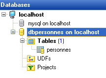
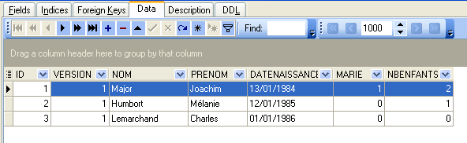
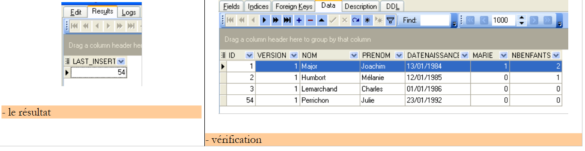
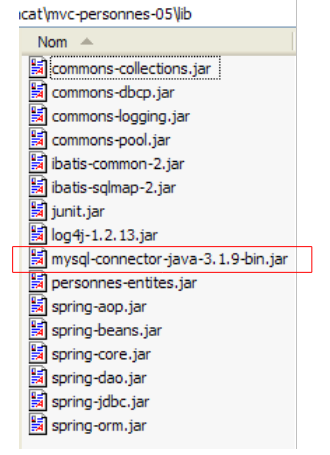
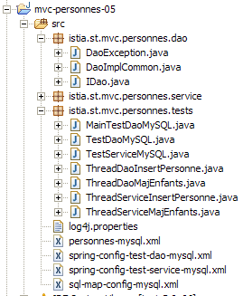
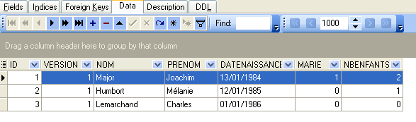
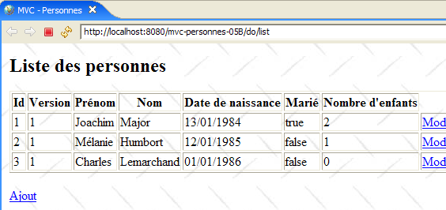

19. Webapplicatie MVC in een 3-tier-architectuur – Voorbeeld 5, MySQL
19.1. De database MySQL
In deze versie gaan we de lijst met personen opslaan in een databasetabel MySQL 4.x. We hebben het pakket [Apache – MySQL – PHP] gebruikt dat beschikbaar is via de url [http://www.easyphp.org]. De onderstaande schermafbeeldingen zijn afkomstig uit de gratis beheerclient EMS MySQL Manager Lite [http://www.sqlmanager.net/fr/products/mysql/manager], een gratis beheerclient van SGBD MySQL.
De database heet [dbpersonnes]. Deze bevat een tabel [PERSONNES]:

De tabel [PERSONNES] bevat de lijst met personen die door de webapplicatie worden beheerd. Deze is opgebouwd met de volgende SQL-opdrachten:
MySQL 4.x lijkt minder uitgebreid dan de twee voorgaande SGBD-opdrachten. Ik heb geen validatiecontroles (checks) aan de tabel kunnen toevoegen.
- regel 10: de tabel moet het type [InnoDB] hebben en niet het type [MyISAM], dat geen transacties ondersteunt.
- regel 2: de primaire sleutel is van het type auto_increment. Als we een rij invoegen zonder waarde voor de kolom ID van de tabel, genereert MySQL automatisch een geheel getal voor deze kolom. Zo hoeven we de primaire sleutels niet zelf te genereren.
De tabel [PERSONNES] zou de volgende inhoud kunnen hebben:

We weten dat bij het invoegen van een object [Personne] door onze laag [dao], het veld [id] van dit object vóór het invoegen gelijk is aan -1 en daarna een andere waarde dan -1 heeft, waarbij deze waarde de primaire sleutel is die is toegewezen aan de nieuwe rij die in de tabel [PERSONNES] is ingevoegd. Laten we aan de hand van een voorbeeld bekijken hoe we deze waarde kunnen achterhalen.
 |
 |
De opdracht SQL
geeft de laatste waarde weer die in het veld ID van de tabel is ingevoerd. Deze moet na het invoegen worden verzonden. Dit verschilt van de opdrachten SGBD, [Firebird] en [Postgres], waarbij vóór het invoegen de waarde van de primaire sleutel van de toegevoegde persoon werd opgevraagd. We zullen dit gebruiken in het bestand [personnes-mysql.xml], dat de opdrachten SQL verzamelt die naar de database zijn verzonden.
19.2. Het Eclipse-project van de lagen [dao] en [service]
Om de lagen [dao] en [service] van onze applicatie met de database MySQL te ontwikkelen, gebruiken we het volgende Eclipse-project [mvc-personnes-05]:

Het project is een eenvoudig Java-project, geen Tomcat-webproject.
Map [src]
Deze map bevat de broncode van de lagen [dao] en [service], evenals de configuratiebestanden van deze twee lagen:

Alle bestanden met [mysql] in hun naam kunnen al dan niet zijn gewijzigd ten opzichte van de Firebird- en Postgres-versies. Hieronder beschrijven we de bestanden die zijn gewijzigd.
Map [database]
Dit dossier bevat het script voor het aanmaken van de personen-database MySQL:

Map [lib]
Deze map bevat de bestanden die nodig zijn voor de toepassing:
 |
Let op de aanwezigheid van de JDBC-driver van SGBD MySQL. Al deze bestanden maken deel uit van het Eclipse-project Classpath.
19.3. De laag [dao]
De laag [dao] ziet er als volgt uit:

We vermelden alleen wat er is veranderd ten opzichte van de versie [Firebird].
Het mappingbestand [personne-mysql.xml] is als volgt:
<?xml version="1.0" encoding="UTF-8" ?>
<!DOCTYPE sqlMap
PUBLIC "-//iBATIS.com//DTD SQL Map 2.0//EN"
"http://www.ibatis.com/dtd/sql-map-2.dtd">
<sqlMap>
<!-- klasse-alias [Personne] -->
<typeAlias alias="Personne.classe"
type="istia.st.mvc.personnes.entites.Personne"/>
<!-- toewijzingstabel [PERSONNES] - object [Personne] -->
<resultMap id="Personne.map"
class="istia.st.mvc.personnes.entites.Personne">
<result property="id" column="ID" />
<result property="version" column="VERSION" />
<result property="nom" column="NOM"/>
<result property="prenom" column="PRENOM"/>
<result property="dateNaissance" column="DATENAISSANCE"/>
<result property="marie" column="MARIE"/>
<result property="nbEnfants" column="NBENFANTS"/>
</resultMap>
<!-- lijst van alle personen -->
<select id="Personne.getAll" resultMap="Personne.map" > select ID, VERSION, NOM,
PRENOM, DATENAISSANCE, MARIE, NBENFANTS FROM PERSONNES</select>
<!-- een specifieke persoon ophalen -->
<select id="Personne.getOne" resultMap="Personne.map" >select ID, VERSION, NOM,
PRENOM, DATENAISSANCE, MARIE, NBENFANTS FROM PERSONNES WHERE ID=#waarde#</select>
<!-- een persoon toevoegen -->
<insert id="Personne.insertOne" parameterClass="Personne.classe">
insert into
PERSONNES(VERSION, NOM, PRENOM, DATENAISSANCE, MARIE, NBENFANTS)
VALUES(#versie#, #achternaam#, #voornaam#, #dateNaissance#, #getrouwd#,
#nbEnfants#)
<selectKey keyProperty="id">
select LAST_INSERT_ID() as value
</selectKey>
</insert>
<!-- een persoon bijwerken -->
<update id="Personne.updateOne" parameterClass="Personne.classe"> update
PERSONNES set VERSION=#versie#+1, NOM=#achternaam#, PRENOM=#voornaam#, DATENAISSANCE=#dateNaissance#,
MARIE=#marie#, NBENFANTS=#nbEnfants# WHERE ID=#id# en
VERSION=#versie#</update>
<!-- een persoon verwijderen -->
<delete id="Personne.deleteOne" parameterClass="int"> delete FROM PERSONNES WHERE
ID=#waarde# </delete>
<!-- de waarde van de primaire sleutel [id] van de laatst toegevoegde persoon ophalen -->
<select id="Personne.getNextId" resultClass="int">select
LAST_INSERT_ID()</select>
</sqlMap>
De inhoud is identiek aan die van [personnes-firebird.xml], op de volgende details na:
- de opdracht SQL " Personne.insertOne " is gewijzigd in de regels 29-37:
- de invoegopdracht SQL wordt uitgevoerd vóór de opdracht SELECT, waardoor de waarde van de primaire sleutel van de ingevoegde regel kan worden opgehaald
- de invoegopdracht SQL heeft geen waarde voor de kolom ID van de tabel [PERSONNES]
Dit komt overeen met het invoegvoorbeeld dat we in paragraaf 19.1 hebben besproken.
Merk op dat dit mogelijk een bron van problemen kan zijn bij concurrerende threads. Stel dat twee threads, Th1 en Th2, tegelijkertijd een invoeging uitvoeren. Er moeten in totaal vier SQL-opdrachten worden verzonden. Laten we aannemen dat deze in de volgende volgorde worden uitgevoerd:
- invoeging I1 door Th1
- invoeging I2 door Th2
- selectie S1 door Th1
- select S2 van Th2
In stap 3 haalt Th1 de primaire sleutel op die bij de laatste invoeging is gegenereerd, dus die van Th2 en niet die van zichzelf. Ik weet niet of de methode [insert] van iBATIS in dit geval beveiligd is. We gaan ervan uit dat deze het correct afhandelt. Als dat niet het geval zou zijn, zouden we de implementatieklasse [DaoImplCommon] van de laag [dao] moeten afleiden tot een klasse [DaoImplMySQL] waarin de methode [insertPersonne] gesynchroniseerd zou zijn. Dit zou het probleem alleen oplossen voor de threads van onze applicatie. Als Th1 en Th2 hierboven threads zijn van twee verschillende applicaties, dan zou het probleem moeten worden opgelost met zowel transacties als een passend isolatieniveau (isolation level) tussen transacties. Het isolatieniveau [serializable], waarbij transacties worden uitgevoerd alsof ze sequentieel plaatsvinden, zou geschikt zijn.
Opgemerkt moet worden dat dit probleem niet bestaat bij Firebird en Postgres, die de transactie SELECT vóór de transactie INSERT uitvoeren. Als we bijvoorbeeld de volgende reeks hebben:
- select S1 van Th1
- select S2 van Th2
- invoeging I1 van Th1
- invoeging I2 van Th2
In stap 1 en 2 halen Th1 en Th2 primaire sleutelwaarden op bij dezelfde generator. Deze bewerking is normaal gesproken atomair, en Th1 en Th2 zullen twee verschillende waarden ophalen. Als de bewerking niet atomair zou zijn en Th1 en Th2 twee identieke waarden zouden ophalen, zou de invoeging die in stap 4 door Th2 wordt uitgevoerd, mislukken vanwege een dubbele primaire sleutel. Dit is een volledig herstelbare fout en Th2 kan de invoeging opnieuw proberen.
We laten de bewerking „Personne.insertOne“ zoals deze momenteel in het bestand [personnes-mysql.xml] staat, maar de lezer moet zich ervan bewust zijn dat hier mogelijk een probleem schuilt.
De implementatieklasse [DaoImplCommon] van de laag [dao] is dezelfde als die van de twee voorgaande versies.
De configuratie van de laag [dao] is aangepast aan SGBD en [MySQL]. Het configuratiebestand [spring-config-test-dao-mysql.xml] ziet er dus als volgt uit:
<?xml version="1.0" encoding="ISO_8859-1"?>
<!DOCTYPE beans SYSTEM "http://www.springframework.org/dtd/spring-beans.dtd">
<beans>
<!-- de gegevensbron DBCP -->
<bean id="dataSource" class="org.apache.commons.dbcp.BasicDataSource"
destroy-method="close">
<property name="driverClassName">
<value>com.mysql.jdbc.Driver</value>
</property>
<property name="url">
<value>jdbc:mysql://localhost/dbpersonnes</value>
</property>
<property name="username">
<value>root</value>
</property>
<property name="password">
<value></value>
</property>
</bean>
<!-- SqlMapCllient -->
<bean id="sqlMapClient"
class="org.springframework.orm.ibatis.SqlMapClientFactoryBean">
<property name="dataSource">
<ref local="dataSource"/>
</property>
<property name="configLocation">
<value>classpath:sql-map-config-mysql.xml</value>
</property>
</bean>
<!-- de toegangsklasse tot de laag [dao] -->
<bean id="dao" class="istia.st.mvc.personnes.dao.DaoImplCommon">
<property name="sqlMapClient">
<ref local="sqlMapClient"/>
</property>
</bean>
</beans>
- regels 5-19: de bean [dataSource] verwijst nu naar de database [MySQL] [dbpersonnes], waarvan de beheerder [root] is zonder wachtwoord. De lezer moet deze configuratie aanpassen aan zijn eigen omgeving.
- regel 31: de klasse [DaoImplCommon] is de implementatieklasse van de laag [dao]
Nadat deze wijzigingen zijn aangebracht, kan men overgaan tot het testen.
19.4. De tests van de lagen [dao] en [service]
De tests van de lagen [dao] en [service] zijn dezelfde als voor de versie [Firebird]. De verkregen resultaten zijn als volgt:
 |
We zien dat de tests met de implementatie [DaoImplCommon] met succes zijn doorlopen. We hoeven deze klasse niet af te leiden, zoals wel nodig was bij de SGBD en [Firebird].
19.5. Tests van de applicatie [web]
Om de webapplicatie met de SGBD en [MySQL] te testen, bouwen we een Eclipse-project [mvc-personnes-05B] op, op dezelfde manier als bij het bouwen van het project [mvc-personnes-03B] met de Firebird-database (zie paragraaf 17.7). Net als bij Postgres hoeven we de archieven [personnes-dao.jar] en [personnes-service.jar] echter niet opnieuw aan te maken, aangezien we geen klassen hebben gewijzigd.
We implementeren het webproject [mvc-personnes-05B] in Tomcat:
 |  |
SGBD en MySQL worden gestart. De inhoud van de tabel [PERSONNES] is dan als volgt:

Tomcat wordt op zijn beurt gestart. Met een browser roepen we de URL [http://localhost:8080/mvc-personnes-05B] op:

We voegen een nieuwe persoon toe via de link [Ajout]:
 |  |
We controleren of de toevoeging in de database is gelukt:

De lezer wordt uitgenodigd om nog meer tests uit te voeren: [modification, suppression].